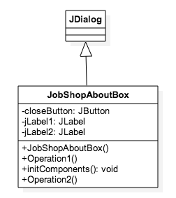
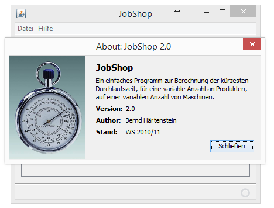
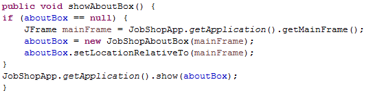

Die Klasse JobShopAboutBox

Die Klasse JobShopAboutBox zeigt grundlegende Metainformationen über die JobShopNeu Applikation:

Die Klasse JobShopView ruft die Methode showAboutBox() auf, woraufhin sofern noch nicht vorhanden, ein Frame erstellt wird und der Klasse JobShopAboutBox als Parameter übergeben wird. Andernfalls wird die AboutBox direkt angezeigt.

Die Klasse JobShopAboutBox selbst erbt von der Klasse javax.swing.JDialog. Der JDialog ähnelt sehr stark einem JFrame mit der Ausnahme, dass der JDialog modal gesetzt werden kann. Modal bedeutet, dass, während der betreffende JDialog angezeigt wird, kein anderes Fenster verwendbar bzw. aktivierbar ist. Über die Methode initComponents() werden verschiedene JLabel sowie ein JButton initialisert. Der JButton dient zum Schließen des Fensters, die JLabel für die Angaben zur Beschreibung, der Version, des Autors, sowie dem Stand, was in obiger Abbildung sehr gut zu erkennen ist. Mit Hilfe des dispose Befehls, werden die zugeordneten Windows-Ressourcen wieder freigegeben.